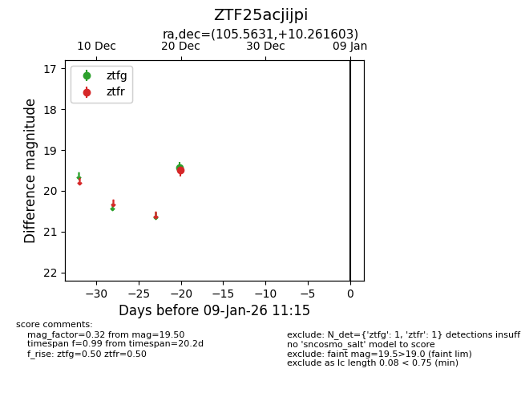
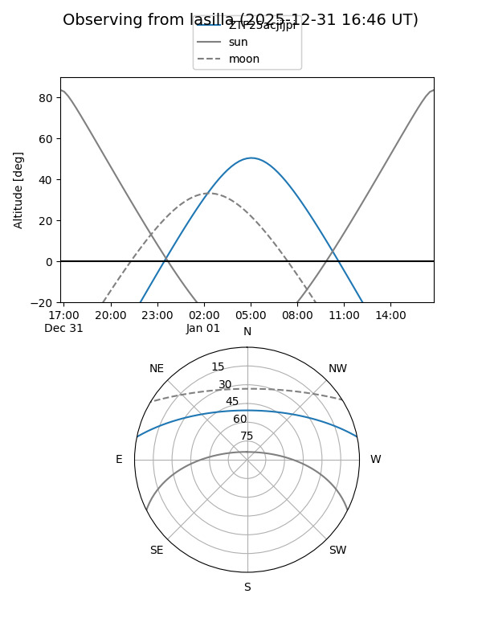

ZTF25acjijpi
Target ZTF25acjijpi at 2025-12-20 09:34
Aliases and brokers:
FINK: fink-portal.org/ZTF25acjijpi
Lasair: lasair-ztf.lsst.ac.uk/objects/ZTF25acjijpi
ALeRCE: alerce.online/object/ZTF25acjijpi
alt names
ZTF25acjijpi (ztf,fink_ztf)
Coordinates:
equatorial (ra, dec) = 105.5631,+10.26160
equatorial (HMS+DMS) = 07:02:15.15,+10:15:41.77
galactic (l, b) = (204.9753,+7.03869)
Flags:
Photometry:
last ztfr=19.50
1 ztfr detections
Lightcurve

Visibility


Additional plots